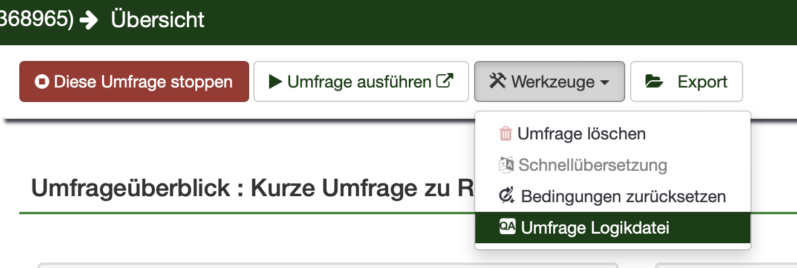

Show code
library(tidyverse)
library(reshape2)
library(reactable)
palette1 <- c("#648fff","#785ef0","#dc267f","#fe6100","#ffb000","#000000","#ffffff")
palette2 <- c("#CC79A7","#D55E00","#0072B2","#F0E442","#009E73","#56B4E9","#E69F00","#000000")Seminar[4] <- Konkrete Anwendungsfälle: Studien & Limesurvey
library(tidyverse)
library(reshape2)
library(reactable)
palette1 <- c("#648fff","#785ef0","#dc267f","#fe6100","#ffb000","#000000","#ffffff")
palette2 <- c("#CC79A7","#D55E00","#0072B2","#F0E442","#009E73","#56B4E9","#E69F00","#000000")In der letzten Woche habt ihr kennengelernt, wie wir mit R ganz einfach statistische Verfahren anwenden können, um relevante Fragestellungen zu beantworten. Dabei habt ihr sowohl gelernt, wie ihr einfache deskriptive Analysen macht, als auch komplexere, inferenzstatistische Methoden anwendet. Zuletzt habt ihr dann noch gelernt, wie ihr eure Ergebnisse in einem Bericht “publizierfähig” speichern könnt.
In dieser Woche soll es darum gehen, diese Fähigkeiten mit denen aus den vorigen Wochen zu verknüpfen, und gemeinsam an einem konkreten Beispiel zu arbeiten. Dabei wollen wir mit einem Datensatz arbeiten, wie ihr ihn auch erhalten könntet, wenn ihr bspw. mit Limesurvey arbeitet.
Zunächst soll es hier aber ein wenig um den Datensatz bzw. die Studie gehen, die wir untersuchen. Der Datensatz ist ein Auszug aus einer Studie, die im Rahmen einer Abschlussarbeit erhoben wurde. Dabei ging es darum, den Einfluss verschiedener Faktoren auf das selbstregulierte Lernen (SRL) während der Corona-Pandemie zu untersuchen.

Konkret ging es darum, die empfundenen Herausforderungen beim selbstregulierten Lernen entsprechend zu erfassen und herauszufinden, inwiefern diese durch individuelle Faktorenwie Gewissenhaftigkeit bzw. situative Faktoren wie die Lernumgebung beeinflusst werden.
Bei der Studie handelte es sich um eine Fragebogenstudie mit kleineren Tests, und die abhängige Variable (SRL-Herausforderungen) sowie die unabhängigen Variablen bzw. Prädiktoren (Gewissenhaftigkeit/Lernumgebung) wurden mittels Fragebögen erhoben. Diese wollen wir uns nun kurz anschauen.
Im Rahmen der Studie wurden einige Instrumente verwendet, über die es gut ist, ein wenig zu erfahren, bevor wir mit der Auswertung beginnen.
Der Fragebogen basierte auf einem angepassten Fragebogen zu Herausforderungen beim kollaborativen Lernen Spang, Fett, and Greisel (2020). Er umfasst 96 Items mit 32 Facetten, abgebildet auf einer 5-stufigen Likert Skala von (1 = kein Problem bis 5 = großes Problem). Hier sieht man ein paar Beispiele sowie im Hintergrund die Facetten:

Gewissenhaftigkeit (engl. conscientiousness) wurde erfasst mittels einer Subskala des deutschen Big-Five Inventorys (BFI-2) Danner et al. (2019). Hier gab es 12 Items, die auf einer 6-Punkte Likert Skala von (1 = nicht wahr, 6 = wahr) beantwortet werden konnten. Beispielitems waren:
„Ich bleibe an einer Aufgabe dran, bis sie erledigt ist.”
„Ich bin eher der chaotische Typ, mache selten sauber.”
Hier bezieht sich Lernumgebung nicht auf eine digitale Lernumgebung wie bspw. Moodle, sondern konkret auf die physische Lernumgebung, die die Lernenden bei sich zuhause haben. Dazu wurden 7 Items entsprechend 3 Dimensionen entwickelt, mit Items wie:
An meinem Lernplatz bin ich von vielen Umgebungsgeräuschen (bspw. Staßenlärm, Gespräche) umgeben.
Ich habe einen festen Ort, an dem ich lerne.
Die Umgebungstemperatur an meinem Lernplatz ist oft zu kalt oder zu warm.
Wir werden ab jetzt den Fragebogen als suboptimal_study bezeichnen.
Beginnen wir also mit der Auswertung. Ladet euch dazu im Moodle den Datensatz dataset_srl_challenges.csv herunter und ladet ihn entsprechend in R.
dataset <- read.csv("dataset_srl_challenges.csv")Nun schauen wir uns die Daten an, um ein Gefühl dafür zu bekommen. Mit 238 Spalten bzw. Variablen ist der Datensatz nicht klein, und mag auf den ersten Blick unübersichtlich wirken.
Frage: Welche könnten die relevanten Variablen (siehe oben) sein?
Mit etwas Scharfsinn können wir sicherlich ermitteln, welche die für uns relevanten Variablen in diesem Dschungel aus Spalten sind. Generell empfiehlt es sich hier allerdings immer, mit einem Codebook zu arbeiten. Wenn wir mit Limesurvey erheben, ist die einfachste Art und Weise, an ein Codebook zu kommen folgende:

Dort bekommt ihr eine genaue Übersicht über die in eurem Datensatz auftauchenden Variablen, sowie die dazugehörigen Ausprägungen etc. Hier sei besonders erwähnt, dass Datensätze üblicherweise nicht so eine schöne Form haben, wie wir es bis jetzt gewohnt waren (bspw. numerische Ausprägungen von 1 bis 5). Vielmehr kann es passieren, dass ihr in eurem Datensatz für eine Variable mit einer 5-stufigen Likert Skala folgende Ausprägungen habt:
Da stellt sich natürlich direkt die Frage, wie die Polarität ist, und wie wir die Variable so umformatieren können, dass wir damit normal rechnen können. Dabei kann die Umfragelogikdatei bzw. ein Codebook sehr helfen. In unserem Fall haben wir leider keine Umfrage-Logikdatei, sondern ein Codebook. Dieses findet ihr ebenfalls im Moodle als codebook.xlsx.
Bevor wir aber an die einzelnen Skalen gehen, wollen wir NAs eliminieren, sofern diese in unserem Datensatz existieren.
Frage: Wie würden wir da vorgehen?
dataset <- dataset %>%
filter(!is.na(submitdate))Frage: Welche Items könnten uns noch Probleme bereiten bzw. müssen umkodiert werden, bevor wir starten können?
Ein kurzer Blick in die Daten über view() zeigt, dass alle Items des Gewissenhaftigkeitsfragebogens (gh_ etc.) unschön kodiert sind. Um das zu ändern, bieten sich einige Optionen an. Wir wollen hier mit dplyr und case_when arbeiten. Die Syntax sieht wie folgt aus:
df %>%
mutate(new_variable = case_when(new_variable == condition1 ~ new_val1,
new_variable == condition2 ~ new_val2))Wir sehen, wie wir für jede einzelne Ausprägung von new_variable entscheiden können, wie new_val dann aussehen soll. Hier kann man auch mehrere Bedingungen verknüpfen, bspw. zusätzlich noch Ausprägungen in anderen Variablen berücksichtigen und dann mit & arbeiten.
Frage: Wenn wir dies nun für unsere Variablen machen wollen, wie würden wir vorgehen?
Dies für jede einzelne Variable zu machen ist natürlich ganz schön aufwändig. Glücklicherweise fangen alle betreffenden Items mit gh_ an, sodass wir diese über across() und starts_with() auswählen können. Das across() hilft uns hier, mehrere Spalten auszuwählen, in Abhängigkeit von Kriterien (in diesem Fall der Name). Doch was genau macht across()?

Im Gegensatz zu mutate() (ohne across) und summarise(), welche quasi Werte über Zeilen hinweg aggregieren, können wir mittels mutate(across()) Werte über Spalten hinweg aggregieren. Das kann sehr hilfreich sein, wenn wir Summenscores bilden wollen. Schaut euch die Syntax hier am besten mal an, und übernehmt sie in eurem Code:
dataset %>%
mutate(across(starts_with("gh_"),function(x) case_when(x == "A01" ~ 1,
x == "A02" ~ 2,
x == "A03" ~ 3,
x == "A04" ~ 4,
x == "A05" ~ 5)))Jetzt müssen wir das natürlich noch über <- im Datensatz speichern.
dataset <- dataset %>%
mutate(across(starts_with("gh_"),function(x) case_when(x == "A01" ~ 1,
x == "A02" ~ 2,
x == "A03" ~ 3,
x == "A04" ~ 4,
x == "A05" ~ 5)))Bevor wir die Fragebögen verwenden können, müssen wir natürlich erst deren Güte prüfen. Starten wir mit unserem Fragebogen für die Lernumgebung. Die packages psych und sjPlot bieten einige praktische Funktionen, die wir hier direkt anwenden können. Über psych::alpha() bekommen wir für eine Auswahl an Spalten Cronbach’s Αlpha berechnet. Über select() können wir die betreffenden Spalten vorher auswählen.
Frage: Berechnet Cronbachs Alpha für die 7 Items des Lernumgebungsfragebogens (
sl_SQ001etc.). Was fällt auf?
dataset %>%
select(sl_SQ001,
sl_SQ002,
sl_SQ003,
sl_SQ004,
sl_SQ005,
sl_SQ006,
sl_SQ007)%>% psych::alpha()Oh nein! Ein genauerer Blick auf die Items (oder entsprechendes Wissen) hätte verraten, dass manche Items negativ kodiert sind. Das zerschießt uns natürlich jegliches Cronbach’s Alpha. Auch da kann dplyr und case_when helfen.
Frage: Kodiert die Variablen
sl_SQ_001undsl_SQ006entsprechend um. Die Werte (min-max) findet ihr bspw. übersummary(dataset$sl_SQ001) heraus. Kodiert so um, dass auf 1 eine 6 wird, aus 2 eine 5 usw. Hier nochmal die Syntax, wie ihr mittelsacross()undcase_wheneinzelne Spalten auswählt. Achtet vor allem auf die Klammern!
df %>%
mutate(across(c(variable1,variable2), function(x) case_when(x==condition ~ newval)))dataset <- dataset %>%
mutate(across(c(sl_SQ001,sl_SQ006),function(x) case_when(x==1 ~ 6,
x==2 ~ 5,
x==3 ~ 4,
x==4 ~ 3,
x==5 ~ 2,
x==6 ~ 1)))Ein neuer Blick auf Cronbachs α verrät, dass unser Umkodieren etwas bewirkt hat, die Fehlermeldung ist verschwunden und der Wert hat sich verbessert.
dataset %>%
select(sl_SQ001,
sl_SQ002,
sl_SQ003,
sl_SQ004,
sl_SQ005,
sl_SQ006,
sl_SQ007)%>% psych::alpha()Um hier nicht zu tief in Test- und Fragebogenkonstruktion abzutauchen, hier nur als kleiner Exkurs: Das package sjPlot kann uns dabei helfen, wichtige Eigenschaften über die Items zu gewinnen, bevor wir Cronbachs α berechnen. Dazu gehören die Itemschwierigkeit (item difficulty) und die Trennschärfe der Items (item discrimination). Der einfache Befehl tab_itemscale() gibt uns gleich ein publizierfähiges Plot:
dataset %>%
select(sl_SQ001,
sl_SQ002,
sl_SQ003,
sl_SQ004,
sl_SQ005,
sl_SQ006,
sl_SQ007)%>% sjPlot::tab_itemscale()| Row | Missings | Mean | SD | Skew | Item Difficulty | Item Discrimination | α if deleted | |
| sl_SQ001 | 0.00 % | 2.03 | 1.28 | 1.41 | 0.34 | 0.28 | 0.55 | |
| sl_SQ002 | 0.00 % | 2.7 | 1.4 | 0.59 | 0.45 | 0.33 | 0.53 | |
| sl_SQ003 | 0.00 % | 3.91 | 1.43 | -0.08 | 0.65 | 0.40 | 0.51 | |
| sl_SQ004 | 0.00 % | 2.93 | 1.53 | 0.5 | 0.49 | 0.23 | 0.57 | |
| sl_SQ005 | 0.00 % | 2.75 | 1.44 | 0.63 | 0.46 | 0.41 | 0.50 | |
| sl_SQ006 | 0.00 % | 4.87 | 1.7 | -1.3 | 0.81 | 0.19 | 0.59 | |
| sl_SQ007 | 0.00 % | 2.22 | 1.4 | 1.11 | 0.37 | 0.30 | 0.54 | |
| Mean inter-item-correlation=0.170 · Cronbach's α=0.581 | ||||||||
Wir können sehen, dass die Itemschwierigkeit bei den meisten Items nahe 0.50 ist, und die Trennschärfe auch nicht zu klein (bis auf vereinzelte Items wie sl_sq006.
Durch eine exploratorische Faktoranalyse, welche wir hier nicht rechnen werden, wurde herausgefunden, dass nicht alle Items unser Konzept suboptimale Lernumgebung gut vorhersagen. Daher haben wir uns entschieden, die folgenden Items zu nehmen: sl_SQ002, sl_SQ003, sl_SQ005 und sl_SQ007. Diese bilden einen Faktor ab, weshalb es nun auch Sinn ergibt hierfür Cronbachs α zu berechnen:
dataset %>%
select(sl_SQ002,
sl_SQ003,
sl_SQ005,
sl_SQ007)%>%
psych::alpha()Dieses ist mit 0.58 zwar immer noch nicht sonderlich gut, im Rahmen dieser Zufallsstichprobe allerdings OK. Wir wollen diese Items nun zusammenfassen, da wir lieber mit einem Wert für suboptimal_study arbeiten wollen. Dazu gibt es zwei Wege:
across() und rowMeans()Across() habt ihr oben bereits kennengelernt. In der Kombination mit der base-R rowMeans() Funktion können wir es nutzen, um Summen bzw. Meanscores für unsere Items zu bilden:
df %>%
mutate(new_variable = rowMeans(across(c(variable1,variable2))))Konkret sieht das dann so aus:
dataset <- dataset %>%
mutate(suboptimal_study = rowMeans(across(c(sl_SQ002,sl_SQ003,sl_SQ005,sl_SQ007))))rowwise() und mean()Um Funktionen nicht mehr per Spalte, sondern per Zeile anzuwenden, bietet sich auch die Kombination aus rowwise() und Funktionen wie bspw. mean() an. Dabei sieht die Syntax wie folgt aus:
df %>%
rowwise()
mutate(new_variable = mean(c(variable1, variable2)))Wenden wir das also auf unseren Datensatz an:
dataset %>%
rowwise() %>%
mutate(suboptimal_study = mean(c(sl_SQ002,sl_SQ003,sl_SQ005,sl_SQ007))) %>% select(suboptimal_study)Wie zu sehen, erhalten wir dieselben Mittelwerte für unsere Skala, wie oben.
Nun wollen wir auch die Subskalen nach dem oben gezeigten Prinzip für unser Konstrukt Gewissenhaftigkeit prüfen. Dazu haben wir alles was wir brauchen:
Datensatz
Codebook mit Variablennnamen und Labels
Literaturangabe Danner et al. (2019)
Mit Items sowie dazugehörigen Dimensionen
Namen der negativ-kodierten Items
Nutzt also die Informationen und eure neu-erlenten Skills, um nun die entsprechenden Subskalen (plot-twist: es sind mehr als eine) zu berechnen (als Mittelwerte). Gebt auch Cronbach’s α für die einzelnen Subskalen an.
write.csv(dataset, "dataset_srl_challenges_wrangled.csv")